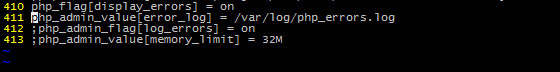

原文出处:本文由博客园博主陶士涵提供。
原文连接:https://www.cnblogs.com/taoshihan/p/10774473.html
原文连接:https://www.cnblogs.com/taoshihan/p/10774473.html
1.error_log($message,$message_type,$destination,$extra_headers)函数,
2.message_type 是0,发送信息到php.ini配置的error_log的位置
cli环境下是这里:/etc/php/7.0/cli/php.ini
fpm环境下是:/etc/php/7.0/fpm/pool.d/www.conf php_admin_value[error_log] = /var/log/php_errors.log 注意这个文件的权限和php-fpm用户的运行

4.message_type 是1:
error_log("xxxx!", 1,"630892807@qq.com");//直接发送到邮箱,需要配置postfix和php.ini的sendmail
直接包安装postfix和配置cli和fpm下的sendmail部分
函数和配置使用2.jpg)
3.message_type 是3就发送到第三个参数指定的文件中
4.message_type 是4直接发送到 SAPI 的日志处理程序中,比如返回给了nginx,可以在nginx配置的error_log里看到。